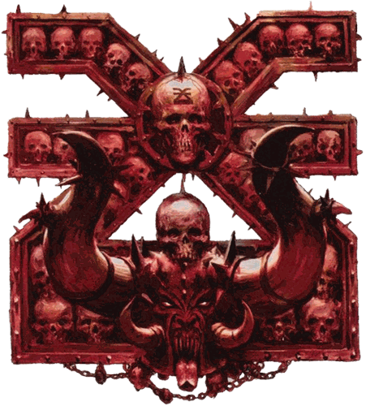

Devastation of Baal
| Devastation of Baal | |
|---|---|
| Part of the Third Tyrannic War and the Indomitus Crusade | |
 Commander Dante at the Arx Angelicum, in a votive painting of the last stand of the Blood Angels Artwork © Games Workshop | |
| Date | 998–999.M41[a] |
| Location | The Baal system, Segmentum Obscurus, and its moons, Baal Prime and Baal Secundus |
| Result | Imperial victory. A tendril of Hive Fleet Leviathan was destroyed or lost in the Warp; the Blood Angels survived with heavy losses |
| Belligerents | |
| Imperium of Mankind | Opposed  Blood Legions of Khorne (hostile to both) |
| Commanders and leaders | |
| † Killed in action | |
| Strength | |
| Casualties and losses | |
| Blood Angels: 5 Successor Chapter Masters killed Most of the Knights of Blood c. 30,000 aspirants killed[c] Fleet defences over Baal destroyed | Tyranids: The tendril destroyed or lost in the Warp Thousands of hive ships swallowed by rifts[2] Hundreds of Tyranids killed for each battle-brother lost |
| Baal Prime lost; millions of its tribesfolk killed[d] | |
The Devastation of Baal, also called the Siege of Baal or the Battle of Baal, was the assault by the greatest concentration of Hive Fleet Leviathan ever met by mankind on the homeworld of the Blood Angels. It was fought in the closing days of the 41st millennium, when the Great Rift opened across the sky. It was the bloodiest and most costly battle in the history of the Blood Angels, and it ended not with their victory in arms, but with an intervention: the opening of the Rift, the appearance of the Khornate daemon Ka'Bandha, and the arrival of the Indomitus Crusade of Roboute Guilliman.[1][2]
The Blood Angels and their Successors survived. Baal was cleansed, and Guilliman gave the survivors Primaris Space Marines of the gene-seed of Sanguinius. The victory was won at heavy cost, and it left a mystery and a menace: it is unknown why Ka'Bandha, the oldest enemy of the Chapter, struck at the Tyranids and spared the Angels. The battle was the end of the Third Tyrannic War. It also led to the appointment of Dante as Lord Regent of the Imperium Nihilus.[1]
Background
[edit]The Third Tyrannic War
[edit]Hive Fleet Leviathan came to the galaxy from beneath the galactic plane in 997.M41, the third and largest of the Tyranid hive fleets to reach the Imperium and the one that began the Third Tyrannic War. Its coming was foreseen by Inquisitor Lord Fidus Kryptman of the Ordo Xenos, who tracked it by the census that bears his name and defeated half of it with the aid of the Ultramarines and Mortifactors at Tarsis Ultra. When the fleet carved on, he diverted much of it into the Ork Empire of Octarius by means of a stolen Genestealer brood, so that the two species fought each other. The tendril that fell on Baal was another part of the fleet, the largest tendril it ever sent.[3]
The Cryptan Shield
[edit]Baal, with its moons Baal Prime and Baal Secundus, was protected by a line of fortified worlds in the Cryptus System, called the Cryptan Shield, which was intended to hold Leviathan back. In 998.M41 word came that its defences had fallen. Dante, the Chapter Master, had already put plans in motion for the defence of Baal, with strike forces fighting hit-and-run battles against the Leviathan's splinter fleets across the Red Scar. When the Shield broke, he took the 1st and 2nd Companies, Chief Librarian Mephiston, the Chief Apothecary Corbulo, Captain Karlaen and the greater part of Gabriel Seth's Flesh Tearers to the Cryptus System, in the campaign that is now called by that name. They arrived in time to aid the last defenders and avert complete collapse, but the fighting was savage. In the end the Blood Angels were forced to unleash an ancient weapon of Necrontyr origin, the Magnovitrium, to destroy an entire world of the system and use the debris to gut the oncoming fleet. Dante accepted that the Tyranids had been slowed but not stopped, and ordered the Chapter to return to Baal.[2]
Preparation
[edit]By the first days of 999.M41, Baal had been reinforced as never before. Fortresses were raised on the sands of Baal and its moons. Fleets of cruisers and battle barges gathered in the void. One by one the Successor Chapters of the Sanguinary Brotherhood answered Dante's call, from the Flesh Tearers and the Blood Drinkers to the insular Carmine Blades, the Angels Encarmine and the Knights of Blood. The Knights of Blood, who had been declared Excommunicate Traitoris by the High Lords of Terra, were accepted by Dante as allies. Only the Lamenters did not come.[2]
Dante also did what no Chapter Master of the Blood Angels had done before. He authorised the removal of the Chapter's gene-seed reserves from their crypts, and sent them away in a swift ship under the guard of Sanguinary Priests. He ordered his gunships to collect every viable aspirant from the nomadic tribes of Baal Prime and Baal Secundus and take them to the Arx Angelicum, where at least forty thousand young men were armed and posted to the defence, and told that any who survived the battle would have proved themselves worthy of the Chapter. Of the tribes that remained, little is said, for they were left to hide or to fight, and most did not survive.[2]
The Tyranid fleet entered the Baal system in clusters so thick that it looked like a single many-limbed organism. Dante sent out his fleet against it, with the aid of the Successors' spacefaring Chapters. The battle was valiant and hopeless. One by one the battle barges and cruisers were isolated and overwhelmed. Where they could, the ships fell back to harass the flanks of the swarm. In low orbit the Leviathan's ships began to release clouds of spores and organic transports, and the Shadow in the Warp closed over the system, so that no further hope of reinforcement could be given. The Blood Angels were alone.[2]
Course of the battle
[edit]Against the swarm
[edit]
The defenders awaited the first waves of the Tyranids in Horus Heresy-era fortifications which the serfs of the Chapter had dug up and restored. The first swarms to land were destroyed by artillery before they reached the lines. By the tenth wave the ground was barely visible under the bodies of the swarm. Hive Tyrants and Tervigons directed their broods and tore holes in the fortifications, into which Genestealers came to fight at close quarters. At the rear of the swarm stood the Swarmlord, spawned again by the Hive Mind to destroy the Blood Angels, who watched their tactics and directed the swarm to counter each of them.[2]
The aspirants' settlement of Angel's Fall, at which the aspirants of the Chapter gathered for their trials, was overrun by an avalanche of chitin. Gabriel Seth and his Flesh Tearers led the counter-attack, cutting the heart out of one swarm after another, but at a price. On Baal Secundus the Carmine Blades defended the astropathic relay in the hope that someone would hear the Chapter's call. Baal Prime, the moon, was in a worse state, for the Tyranids committed overwhelming force there.[2]
In solar weeks of fighting, the Blood Angels and their Successors threw back nineteen waves of assault. Blood Drinkers fought back to back with Angels Encarmine. Assault Marines leapt into the swarm to kill the greatest of the beasts. On the radiation-scorched valleys of Baal, massed Space Marine tanks and artillery met stampedes of Carnifexes. Dante's warriors felled hundreds of Tyranids for every battle-brother lost. But every line broke in turn. Five Chapter Masters of the Sanguinary Brotherhood died in the defence. Three fell in the battle for the Dome of Angels alone.[2]
The Great Rift opens
[edit]It was in this hour that the Great Rift opened. The sky of Baal burned with Warp fire, and, as the fighting on Baal Prime was at its fiercest, reality was torn and the air filled with the smell of brimstone and burning blood. The legions of the Blood God poured through. At their head came the Bloodthirster Ka'Bandha, a bat-winged monster with an axe in one hand and a barbed whip in the other.[2]

No enemy was more hated by the sons of Sanguinius. In the Signus Campaign, thousands of years earlier, Ka'Bandha had stoked in them the Red Thirst, the curse that has ravaged the Chapter since. He wanted the honour of destroying the Blood Angels for himself, and he would not let the Tyranids take it from him. His legions fell on both the Tyranids and the Space Marines, and blood of both species ran in streams. Bloodletters tore at Tyranid Warriors, Bloodcrushers trampled Termagants and Ka'Bandha himself walked through the madness, killing all in his path.[2]
The defenders on Baal Prime, under Gabriel Seth, fell back. The survivors were able to board their ships only because of the sacrifice of the Knights of Blood, who threw themselves into the fighting in a state of the Black Rage and held the Warp-spawned monsters long enough for them to go. Baal Prime was overwhelmed. In orbit, thousands of the Leviathan's ships were snatched into the Warp by coils of empyric energy, or swallowed by rifts in space. What remained was drawn down by the gravity of Baal and burned in its air.[2]
The Arx Angelicum
[edit]Dante led his few remaining warriors in a fighting retreat to the walls of the Arx Angelicum, the fortress-monastery. Time was a victim of the empyric storm. It seemed to the defenders that the fighting lasted for years. Perhaps it lasted for hours or days, and perhaps for years by the standards of the rest of the galaxy. The greatest wave of Tyranids broke the defences of the fortress. Three Successor Chapter Masters fell in the battle of the Dome of Angels. The defenders opened the Tower of Amareo and released the captive members of the Death Company, because if the Blood Angels were to die, they intended to die in battle, on their own terms.[2]
At this critical point the Swarmlord came forward and carved the Space Marines apart with its jagged bone swords. Dante, wounded in a dozen places, fought his way through the press to the monster with his axe, the Axe Mortalis, and the two duelled under the burning sky. Dante killed it, and fell. As his warriors strained to reach him, the sky cleared. The storm had passed. Where the Tyranid fleet had been, there was not a single ship of the xenos. In their place stood the ships of the Imperium. Roboute Guilliman, the resurrected primarch, had arrived with the Indomitus Crusade.[2]
Relief
[edit]Guilliman and his warriors came down in drop pods and Stormravens into the midst of the swarm. The Tyranids on the ground still outnumbered the Space Marines, but the death of the Swarmlord and the loss of their fleet left them reeling, and the Hormagaunts and Termagants reverted to the instincts of beasts. The Primaris Space Marines of Cawl, in the colours of the Blood Angels and their Successors, fought at the primarch's side with their new bolt rifles. The salvation of Baal was neither quick nor cheap, and more Imperial lives were lost before the world was clean. Baal and Baal Secundus were cleared of Tyranids in less than a solar month. On Baal Prime no fighting was needed, for the moon had been scoured of life, both Imperial and Tyranid.[1][2]
The Chapter holds that Guilliman learned, in these days, secrets of its gene-line. He has not spoken of them.[2]
Dante, gravely wounded, knelt before the Lord Commander. In him and in the survivors of the Sanguinary Brotherhood, Guilliman saw a flame kept alive from the Imperium's past, and he gave them an unusual gift: formations of Primaris Space Marines, raised from the gene-seed of Sanguinius, to fill their ranks.[2]
Aftermath
[edit]The Blood Angels began to rebuild. Their gene-seed stocks were recalled to the restored Arx Angelicum. The thousands of aspirants who had survived the siege were all taken into the Chapter, and those who endured the transformation were placed in Scout Companies that Dante enlarged for his Chapter and the Successors alike. The Primaris Marines of the Ark Mechanicus Zar-Quaesitor were joined by others raised on Baal itself with the apparatus that Belisarius Cawl brought. In the Chapter's reconstruction a Sergeant Carleon of the 8th Company, charged with the purge of Baal Secundus and the evaluation of the new Primaris warriors, was promoted to lieutenant.[2]
On Baal Prime, the Daemons had left behind a mountain of Tyranid skulls, piled in the eight-pillared sigil of Khorne across the south of the moon. It was a message to the Chapter. Dante ordered it destroyed by orbital strikes. It remains unknown why Ka'Bandha acted as he did, and it troubles the Blood Angels more than the battle itself. It may be that the Bloodthirster has determined that he alone will be the architect of the ruin of the sons of Sanguinius.[2]
The Third Tyrannic War ended at Baal. The Hive Mind, having failed against the Blood Angels, turned its strength to the Segmentum Pacificus in the galactic west, in what the Imperial historitors call the Fourth Tyrannic War. Guilliman named Dante as Lord Regent of the Imperium Nihilus, the dark half of the Imperium beyond the Rift. The Blood Angels and their Successors, after a period of rebuilding, went out into the Dark Imperium to bring the Emperor's light to those who were oppressed by xenos and Chaos.[1][3]
Records and disputes
[edit]The accounts of the battle differ in several points, as is to be expected given what the Rift did to the passage of time in the system. The Chapter's own record has Ka'Bandha's host appear at Baal Prime at the moment of the Rift's opening. A second report, kept in the archives of the Ordo Malleus, says that the daemon host struck first at Ammonai, the outermost world of the Baal system, and that it was a separate attack. The Chapter's late records say that the Tyranids on Baal lost contact with their fleet when the storms came, and that the Imperial fleet was already in orbit when the defenders broke out of their last perimeter, rather than arriving at the moment of the Swarmlord's death. What became of the Leviathan fragment that was drawn into the Warp is not known.[2]
Timeline
[edit]| Date | Event | Theatre |
|---|---|---|
| 997.M41 | Hive Fleet Leviathan emerges from beneath the galactic plane; Fidus Kryptman defeats half of it at Tarsis Ultra and diverts the rest into Octarius | Tarsis Ultra |
| 998.M41 | The Cryptan Shield falls; Dante takes the 1st and 2nd Companies of the Blood Angels to the Cryptus System | Cryptus System |
| 998.M41 | The Magnovitrium destroys a world of the Cryptus System and the fleet is slowed but not stopped | Cryptus System |
| Early 999.M41 | The Successor Chapters answer Dante's call, among them the Knights of Blood; the Lamenters do not come | Baal |
| Early 999.M41 | The gene-seed reserves are sent away, and at least forty thousand aspirants are armed at the Arx Angelicum | Baal |
| 999.M41 | The Tyranid fleet enters the Baal system and the Shadow in the Warp cuts off any hope of reinforcement | Baal System |
| 999.M41 | The Tyranids break through the first lines; Angel's Fall is overrun and five Chapter Masters of the Sanguinary Brotherhood die | Baal |
| 999.M41 | The Great Rift opens and the legions of Khorne pour through, led by the Bloodthirster Ka'Bandha | Baal Prime |
| 999.M41 | The Knights of Blood hold the Warp-spawned monsters on Baal Prime while the survivors board their ships; Baal Prime is overwhelmed | Baal Prime |
| 999.M41 | Dante leads a fighting retreat to the Arx Angelicum; the Tower of Amareo is opened and the Death Company released | Arx Angelicum |
| 999.M41 | Dante kills the Swarmlord with the Axe Mortalis and falls | Arx Angelicum |
| 999.M41 | Roboute Guilliman arrives with the Indomitus Crusade and the Tyranid fleet is destroyed | Baal |
| 999.M41 | Baal and Baal Secundus are cleared of Tyranids in less than a solar month | Baal Secundus |
| 999.M41 | Guilliman names Dante Lord Regent of the Imperium Nihilus | Imperium Nihilus |
See also
[edit]
Notes
[edit]- ^ The opening of the Great Rift distorted time across the Baal system. Only weeks passed for the defenders, while some records, kept on other worlds, put the battle at many Terran years.
- ^ Estimated; Imperial records give no figure.
- ^ Estimated; Imperial records give no figure.
- ^ Estimated; Imperial records give no figure.
References
[edit]- ^ a b c d e Haley, Guy. Dante (novel). Black Library, Ch. 11. Codex Adeptus Astartes - Blood Angels (8th Edition), pp. 21-23. Games Workshop.
- ^ a b c d e f g h i j k l m n o p q r s t Codex: Tyranids (8th Edition), pp. 28-29. Games Workshop. Warhammer 40,000: Rulebook (8th Edition), pp. 52-53. Games Workshop.
- ^ a b Haley, Guy. Devastation of Baal (novel). Black Library. Warhammer 40,000: Battlesector (Video Game).